Tema 1 Repàs de la distribució normal
1.1 Propietats de la distribució normal
Una variable aleatòria contínua \(X\) és normal de paràmetres \(\mu\) i \(\sigma\), i ho indicarem escrivint \(X\sim N(\mu,\sigma)\), quan la seva funció de densitat és
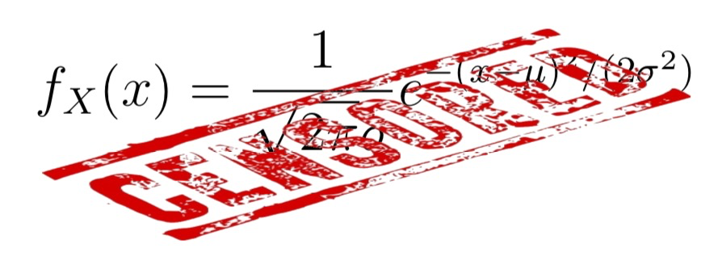
Naturalment, no cal saber aquesta fórmula. El que cal saber és que:
Una variable aleatòria normal \(X\) és contínua, i per tant \(P(X=x)=0\), \(P(X\leqslant x)=P(X<x)\) etc.
Si \(X\sim N(\mu,\sigma)\), aleshores el seu valor esperat és \(E(X)=\mu\) i la seva desviació típica és \(\sigma_X=\sigma\)
Una variable aleatòria normal és típica (o estàndard) quan \(\mu=0\) i \(\sigma=1\); la indicarem usualment amb \(Z\). Per tant, si \(Z\sim N(0,1)\), \(E(Z)=0\) i \(\sigma_Z=1\).
La gràfica de la densitat d’una variable aleatòria normal és la famosa campana de Gauss:
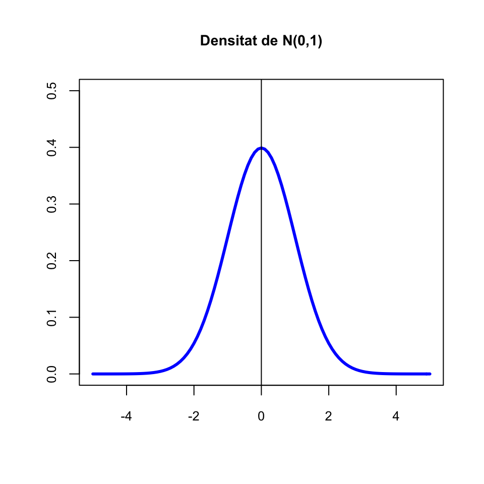
La gràfica de la densitat d’una variable aleatòria normal és també la menys famosa gràfica del capell del gendarme:
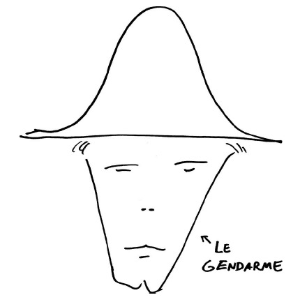
La distribució normal és una distribució teòrica, no la trobareu exacta en la pràctica. I malgrat el seu nom, no és més “normal” que les altres distribucions que estudiarem.
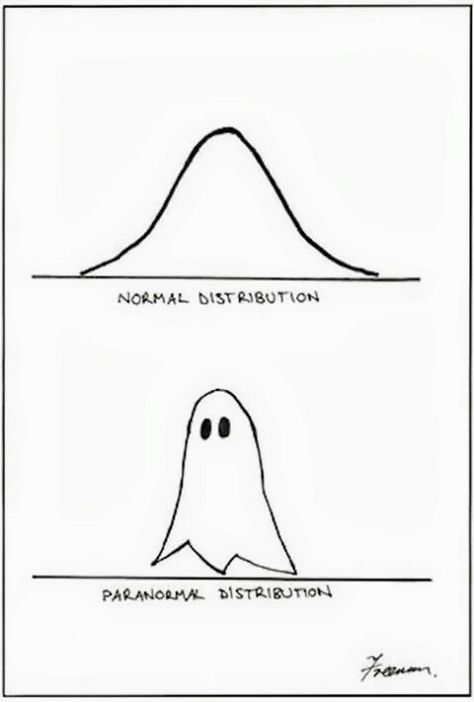
La distribució normal és important perquè aproxima bé moltes distribucions reals, perquè:
Moltes variables aleatòries que consisteixen a prendre \(n\) observacions independents d’una o diverses variables aleatòries i sumar-les, tenen distribució aproximadament normal quan \(n\) és gran, encara que les variables aleatòries de partida no ho siguin.
Per exemple:
- Si \(X\) és una variable aleatòria binomial B(n,p), amb \(n\) gran, alehores \(X\) és aproximadament \(N(np,\sqrt{np(1-p)})\), en el sentit que les dues funcions de densitat (salvant la diferència pel fet que la binomial és discreta i la normal contínua) són semblants:
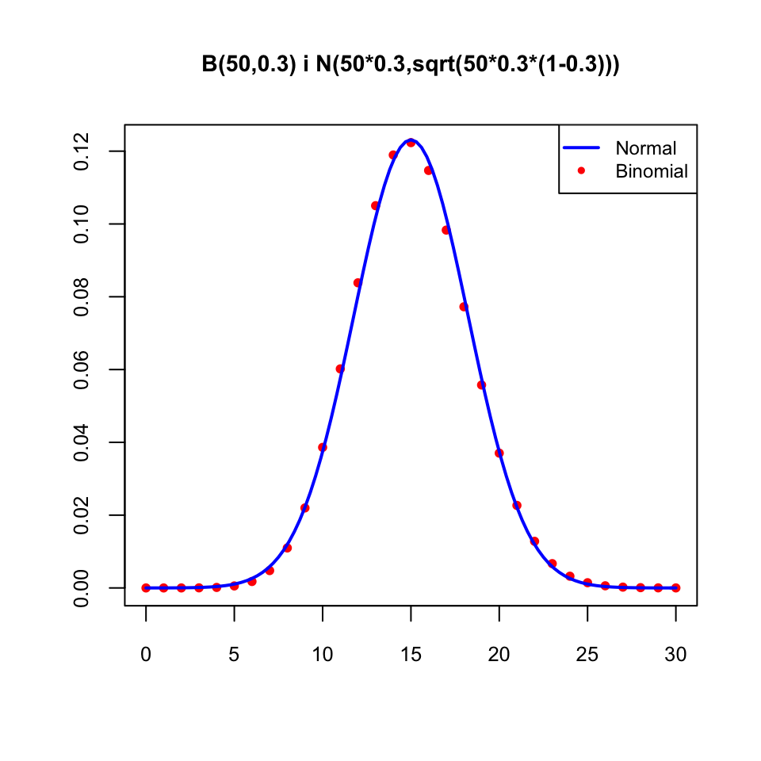
- Si \(X\) és una variable aleatòria de Poisson \(Po(\lambda)\) i \(\lambda\) és gran, aleshores \(X\) és aproximadament \(N(\lambda,\sqrt{\lambda})\)
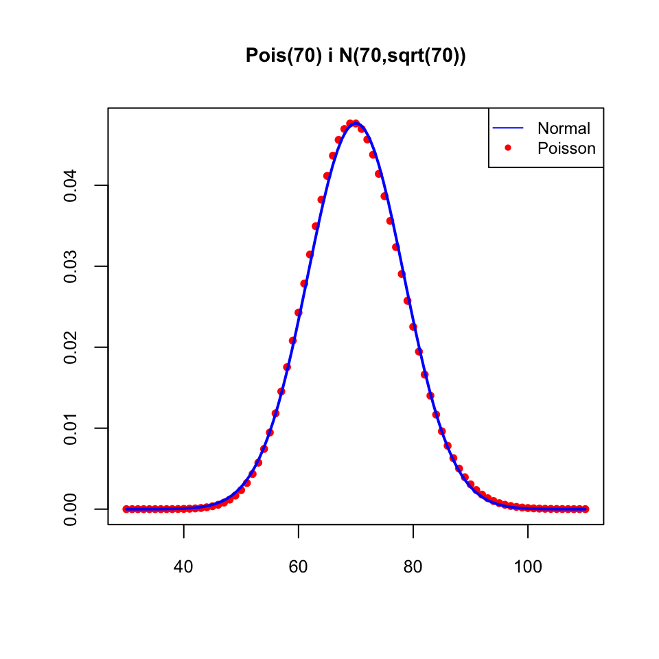
Quan s’aproxima una variable binomial o Poisson \(X\) per mitjà d’una variable normal \(Y\), és convenient aplicar l’anomenada correcció de continuïtat: per a cada \(n\in \mathbb{N}\), interpretar \(P(X\leqslant n)\) com \(P(X< n+1/2)\) i aleshores aproximar:
\(P(X\leqslant n)\) per mitjà de \(P(Y< n+1/2)\)
\(P(X=n)\) per mitjà de \(P(n-1/2< Y< n+1/2)\)
Una de les propietats clau de la distribució normal és la seva simetria:
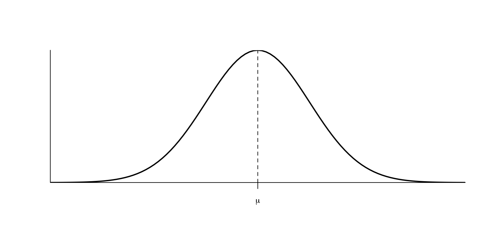
Diem aleshores que \(\mu\) és la moda de \(X\).
En particular, si \(Z\sim N(0,1)\), llavors \(f_{Z}\) és simètrica al voltant de \(x=0\), és a dir, \(f_{Z}(-x)=f_{Z}(x)\), i la moda de \(Z\) és 0.
Si la \(\mu\) creix, el màxim es desplaça a la dreta, i amb ell tota la corba de manera rígida.
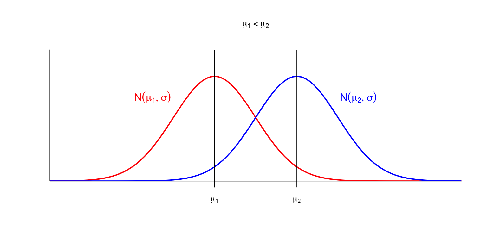
Si la \(\sigma\) creix, la corba s’aplata: en augmentar la desviació típica, els valors s’allunyen més del valor mitjà.
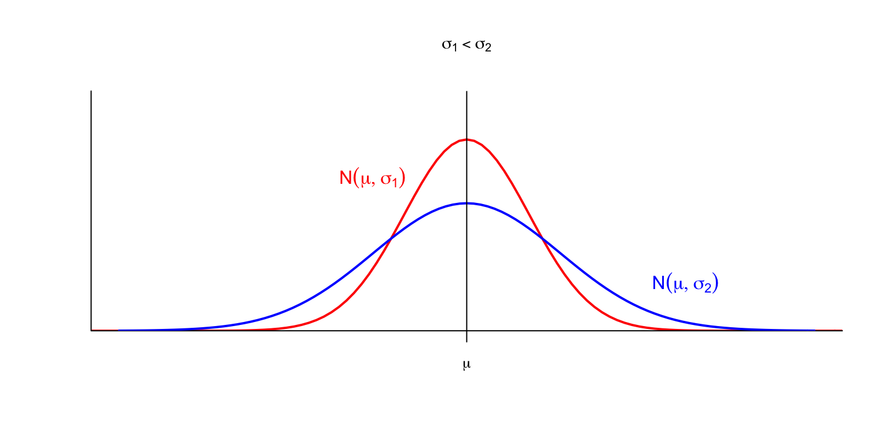
Vegem l’efecte combinat:
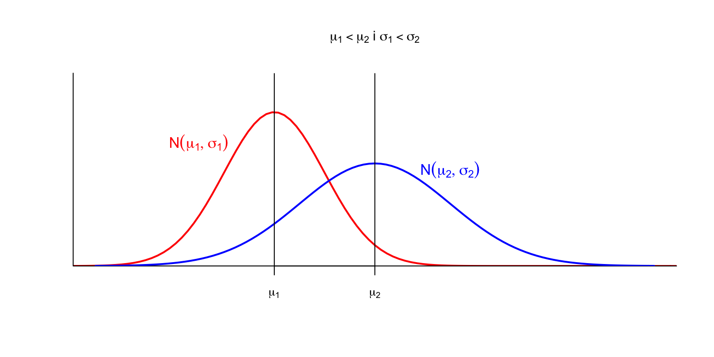
Recordem que la funció de distribució d’una variable aleatòria contínua \(X\) \[ F_X(x)=P(X\leqslant x) \] és l’àrea compresa entre la corba definida per la densitat \(y=f_X(x)\) i l’eix d’abscisses a l’esquerra de \(x\).
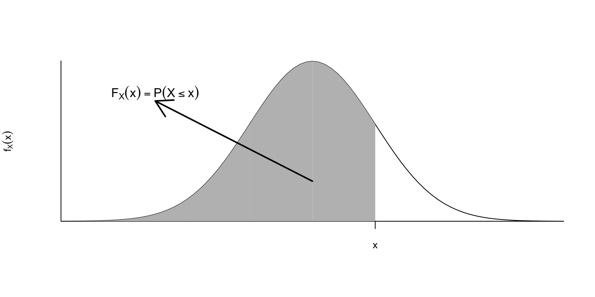
La simetria de \(f_X\) fa que les àrees a l’esquerra de \(\mu-x\) i a la dreta de \(\mu+x\) siguin iguals.
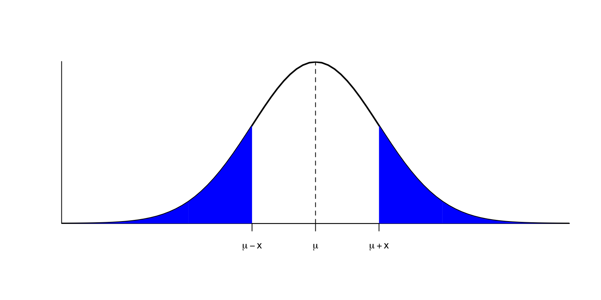
És a dir, \[ P(X\leqslant\mu-x) = P(X\geqslant\mu+x)=1-P(X\leqslant\mu+x) \] En particular (prenent \(x=0\)) \[ P(X\leqslant\mu)=1-P(X\leqslant\mu)\Rightarrow P(X\leqslant\mu)=0.5, \] i per tant \(\mu\) és també la mediana de \(X\).
En particular, si \(Z\sim N(0,1)\), les àrees a l’esquerra de \(-z\) i a la dreta de \(z\) són iguals, \[ P(Z\leqslant-z)=P(Z\geqslant z)=1-P(Z\leqslant z), \] i la mediana de \(Z\) és 0.
Indicarem amb \(z_q\) el \(q\)-quantil d’una variable normal estàndard \(Z\). És a dir, \(z_q\) és el valor tal que \(P(Z\leqslant z_q)=q\).
A banda del fet que \(z_{0.5}=0\) (la mediana de \(Z\) és 0), hi ha dos quantils més de la normal estándard que heu de saber “de memòria”:
\(z_{0.95}=1.64\); és a dir, \(P(Z\leqslant 1.64)=0.95\) i per tant \(P(Z\leqslant-1.64)=P(Z\geqslant 1.64)=0.05\).
\(z_{0.975}=1.96\); és a dir, \(P(Z\leqslant 1.96)=0.975\) i per tant \(P(Z\leqslant-1.96)=P(Z\leqslant 1.96)=0.025\)
1.2 Amb R
Per calcular probabilitats d’una variable normal emprant R, heu de recordar que la normal és norm.
Per tant, si \(X\sim N(\mu,\sigma)\):
dnorm(x,mu,sigma)dóna el valor de la densitat \(f_X(x)\)pnorm(x,mu,sigma)dóna el valor de la distribució \(F_X(x)=P(X\leqslant x)\); afegint-hi el paràmetrelower.tail=FALSEdóna el valor de \(P(X>x)\)qnorm(q,mu,sigma)dóna el \(q\)-quantil de \(X\)rnorm(N,mu,sigma)dóna un vector de \(n\) nombres aleatoris generats amb aquesta distribució
A la normal estàndard no és necessari entrar-hi \(\mu=0\) i \(\sigma=1\), són els valors per defecte d’aquests paràmetres.
Vegem-ne alguns exemples:
- Si \(X\sim N(3,0.5)\), què val \(P(X\leqslant 2)\)?
## [1] 0.02275013- Si \(X\sim N(-2,0.3)\), què val \(P(X\geqslant-1.8)\)?
## [1] 0.2524925## [1] 0.2524925Si \(X\sim N(0,1)\), què val \(P(-1\leqslant X\leqslant 1)\)?
Com que \(P(-1\leqslant X\leqslant 1)=P(X\leqslant 1)-P(X\leqslant-1)\),
## [1] 0.6826895- Què val el primer quartil d’una variable \(N(3,0.5)\)?
## [1] 2.662755Exemple 1.1 A la secció anterior, us hem dit que una variable binomial \(B(n,p)\) amb \(n\) gran s’aproxima per mitjà d’una variable normal \(N(np,\sqrt{np(1-p)})\). Així, per exemple, una variable \(X\sim B(400,0.2)\) s’aproxima per mitjà d’una variable \(Y\sim N(400\cdot 0.2,\sqrt{400\cdot 0.2\cdot 0.8})=N(80,8)\). Vegem amb alguns exemples que aquesta aproximació és millor aplicant-hi la correcció de continuïtat:
- \(P(X\leqslant 70)\):
## [1] 0.1163917- \(P(Y< 70+1/2)\):
## [1] 0.1175152- \(P(Y\leqslant 70)\):
## [1] 0.1056498- \(P(X=70)\):
## [1] 0.02338443- \(P(70-1/2< Y< 70+1/2)\):
## [1] 0.02283949- \(P(Y=70)\):
## [1] 0.02283114dnorm(70,80,8) és la funció de densitat de \(Y\) (la fórmula que hem censurat al començament d’aquest tema) aplicada a 70, i no és igual a la probabilitat que \(Y\) valgui 70. Recordau que \(P(Y=70)=0\) perquè \(Y\) és contínua.
1.3 Combinacions lineals
El resultat següent descriu el comportament de la mitjana i la variància d’una combinació lineal de variables aleatòries:
Teorema 1.1 Siguin \(Y_1,\ldots,Y_n\) variables aleatòries, cada \(Y_i\) de mitjana \(\mu_i\) i variància \(\sigma_i^2\), i siguin \(a_1,\ldots,a_n,b\in \mathbb{R}\). Sigui \(Y\) la variable aleatòria \[ Y=a_1Y_1+\cdots+a_nY_n+b. \] Aleshores
La mitjana de \(Y\) és \[ \mu_Y=a_1\mu_1+\cdots+a_n\mu_n+b. \]
Si \(Y_1,\ldots,Y_n\) són independents, aleshores la variància de \(Y\) és \[ \sigma_Y^2=a_1^2\sigma_1^2+\cdots+a_n^2\sigma_n^2 \] i per tant la seva desviació típica és \[ \sigma_Y=\sqrt{a_1^2\sigma_1^2+\cdots+a_n^2\sigma_n^2}. \]
Una altra propietat destacada de la distribució normal és que tota combinació lineal de variables aleatòries normals independents torna a ser normal:
Teorema 1.2 Si \(Y_1,\ldots,Y_n\) son variables aleatòries normals independents, cada \(Y_i\sim N(\mu_i,\sigma_i)\), i \(a_1,\ldots,a_n,b\in \mathbb{R}\), aleshores \[ Y=a_1Y_1+\cdots+a_nY_n+b \] és una variable aleatòria \(N(\mu,\sigma)\) amb \(\mu\) i \(\sigma\) els que toquin pel teorema anterior:
\(\mu=a_1\mu_1+\cdots+a_n\mu_n+b\)
\(\sigma=\sqrt{a_1^2\sigma_1^2+\cdots+a_n^2\sigma_n^2}\)
Com a cas particular, obtenim que una transformació afí d’una variable aleatòria normal torna a ser normal:
Teorema 1.3 Si \(X\sim N(\mu,\sigma)\) i \(a,b\in \mathbb{R}\), llavors \(aX+b\) també és normal, i en concret és \(N(a\mu+b,|a|\cdot\sigma)\).
En particular, si \(X\sim N(\mu,\sigma)\), llavors la seva tipificada \[ Z=\dfrac{X-\mu}{\sigma} \] és \(N(0,1)\).
Les probabilitats de la normal tipificada determinen les de la normal original, perquè si \(X\sim N(\mu,\sigma)\), \[ \begin{array}{rl} P(a\leqslant X\leqslant b) & \displaystyle =P\Big( \frac{a-\mu}{\sigma}\leqslant\frac{X-\mu}{\sigma}\leqslant\frac{b-\mu}{\sigma}\Big)\\ & \displaystyle =P\Big(\frac{a-\mu}{\sigma}\leqslant Z\leqslant\frac{b-\mu}{\sigma}\Big) \end{array} \]
1.4 Intervals de referència
Un interval de referència del \(100q\%\) per a una variable aleatòria \(X\) és un interval \([a,b]\) tal que \[ P(a\leqslant X\leqslant b)=q. \] És a dir, un interval de referència del \(100q\%\) per a \(X\) és un interval que conté els valors de \(X\) del \(100q\%\) de subjectes de la població on està definida.
Els més comuns són els intervals de referència del 95% (\(q=0.95\)), que satisfan que \[ P(a\leqslant X\leqslant b)=0.95 \] i són els, que per exemple, us donen com a valors de referència a les analítiques:
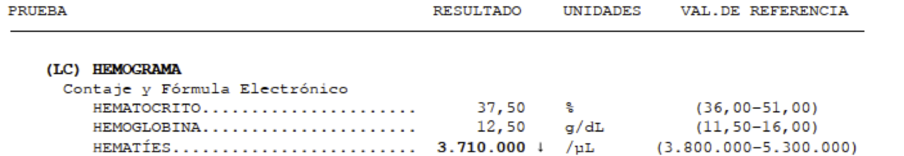
Quan \(X\sim N(\mu,\sigma)\), aquests intervals de referència es prenen sempre centrats en la mitjana \(\mu\), és a dir, de la forma \([\mu-x,\mu+x]\). Per calcular-los fàcilment, podem emprar el resultat següent:
Teorema 1.4 Si \(X\sim N(\mu,\sigma)\), un interval de referència del \(100q\%\) és \[ [\mu- z_{(1+q)/2}\cdot \sigma, \mu+ z_{(1+q)/2}\cdot \sigma] \] on \(z_{(1+q)/2}\) indica el \((1+q)/2\)-quantil de \(Z\sim N(0,1)\). L’escriurem \[ \mu\pm z_{(1+q)/2}\cdot \sigma. \]
En efecte: \[ \begin{array}{l} P(\mu-x\leqslant X\leqslant\mu+x)=q\\ \qquad \Longleftrightarrow \displaystyle P\Big(\frac{\mu-x-\mu}{\sigma}\leqslant\frac{X-\mu}{\sigma}\leqslant\frac{\mu+x-\mu}{\sigma}\Big)=q\\ \qquad \Longleftrightarrow \displaystyle P(-x/{\sigma}\leqslant Z\leqslant{x}/{\sigma})=q\\ \qquad \Longleftrightarrow \displaystyle P(Z\leqslant{x}/{\sigma})-P(Z\leqslant-{x}/{\sigma})=q\\ \qquad \Longleftrightarrow \displaystyle P(Z\leqslant{x}/{\sigma})-(1-P(Z\leqslant{x}/{\sigma}))=q\\ \qquad \mbox{(per la simetria de $f_Z$ al voltant de 0)}\\ \qquad \Longleftrightarrow \displaystyle 2P(Z\leqslant{x}/{\sigma})=q+1\\ \qquad \Longleftrightarrow P(Z\leqslant{x}/{\sigma})=(1+q)/2\\ \qquad \Longleftrightarrow x/\sigma= z_{(1+q)/2}\\ \qquad \Longleftrightarrow x=z_{(1+q)/2}\cdot \sigma \end{array} \]
En particular, com que si \(q=0.95\), aleshores \((1+q)/2=0.975\) i llavors \(z_{0.975}=1.96\), i això sovint s’aproxima per 2, l’interval de referència del 95% per a \(X\sim N(\mu,\sigma)\) és \[ \mu\pm 1.96\sigma \] o simplement, per simplificar, \[ \mu\pm 2\sigma. \] Això diu, bàsicament, que
si una població segueix una distribució normal \(N(\mu,\sigma)\), un 95% dels seus individus tenen el seu valor de \(X\) a distància como a màxim \(2\sigma\) (“a dues sigmes”) de \(\mu\).
Exemple 1.2 Segons l’OMS, les alçades de les dones europees de 18 anys segueixen una llei \(N(163.1,18.53)\). Vull trobar un interval d’alçades centrat en la mitjana que contengui les de la meitat de les europees de 18 anys. És, a dir, vull trobar l’interval de referència del 50% per a la variable aleatòria \(X\) definida per les alçades de les dones europees de 18 anys.
Com que \(X\sim N(163.1,18.53)\) i si \(q=0.5\), aleshores \((1+q)/2=0.75\), aquest interval és
## [1] 150.6017 175.5983Arrodonint a cm, és l’interval [151, 176]. Per tant, la meitat de les dones europees de 18 anys fan entre 1.51 m i 1.76 m d’alçada.
Exemple 1.3 Quin és l’interval de referència per a les alçades de les dones europees de 18 anys?
Com que sobreentenem que es tracta de l’interval de referència del 95%, és \[ 163.1\pm 1.96\times 18.53\Longrightarrow [127, 199] \]
1.5 El z-score
El z-score (o valor z, puntuació z) d’un valor \(x_0\) respecte d’una distribució \(N(\mu,\sigma)\) és \[ \frac{x_0-\mu}{\sigma}. \] És a dir, el z-score de \(x_0\) és el resultat de “tipificar” \(x_0\) en el sentit del Teorema 1.3.
Si la variable poblacional és normal, com més gran és el valor absolut del z-score de \(x_0\), més “rar” és \(x_0\); el signe ens diu si és més gran o més petit que el valor esperat \(\mu\).
Serà: \[ \frac{191-163.1}{18.53}=1.5 \] Això normalment es llegeix dient que aquesta alçada “està a 1.5 sigmes de l’alçada mitjana.”